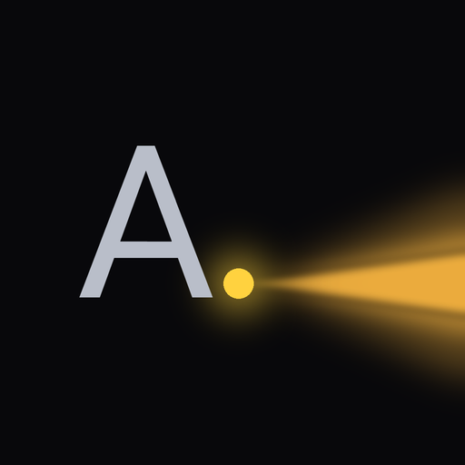

Point your phone. Ask. Hear where things are.
Alumbra is a visual assistant for blind and low-vision people. It answers with directions you can act on: not "a kitchen", but "the red mug is at your 2 o'clock, about a meter away, left of the sink".
Test build (APK) · Android 8.0 or newer · free to try while the test runs

AI handles the everyday; people handle the hard.
What it does
- Ask about anything in view. "What's in front of me?" "Where are my glasses?" "How many chairs are there?"
- Directions you can use. Clock positions and distances, measured from the photo rather than guessed.
- Path checks. "Is the way to the door clear?" gets a computed yes or no, with any obstacle named. In the dark, it says it can't tell rather than guess.
- Labels. "Which bottle is the ibuprofen?" reads the labels and tells you where it is.
- A person for the hard questions. Crossing a street or taking a dose of medicine goes to a human volunteer, never to the AI alone.
- Built for screen readers. One large button, spoken status, and every control labelled for TalkBack.
Try it
- Download the APK on your Android phone with the button above.
- Allow the install. Android will ask you to allow installs from your browser ("Install unknown apps"). This is a test build, so it is not in the Play Store yet.
- Open Alumbra and allow the camera and microphone.
- Tap the big button to take a photo, then say your question. Or press and hold to record a short clip while you talk. You can also type the question.
- Listen. The answer is spoken and shown on screen. Ask a follow-up without taking a new photo.
About this test version
- No account needed. The app registers itself the first time you ask.
- Each phone can ask 10 questions every 5 minutes. If the test is full, the app says so.
- Answers take about 25 to 35 seconds. The app tells you it's working.
- Alumbra can be wrong. Don't rely on it for your safety; use your cane, your dog, and people around you.
Learn more
How it worksThe pipeline from photo to spoken answer, and which model does which job, with flow diagrams.
BenchmarksEvery test we ran: the eval suite, model races, latency profiles, and what changed because of them.
Volunteer escalationWhich questions go to a person, how the handoff works, and what the volunteer sees.
RoadmapImprovements measured or designed but not built yet, and what a real release needs.
Your data
- Photos are not stored. A photo is kept in the server's memory for up to an hour so follow-up questions work, then discarded.
- Who sees what: the photo goes to the vision models (Meta's Model API, and Baseten for some parts). The question and a text summary of the scene go to the Jev intent classifier. The answer text goes to Mistral to be voiced.
- Volunteers see only the photo, question and scene summary of an ask that was handed to them.
- The app keeps your recent questions and answers on your phone, in its History.